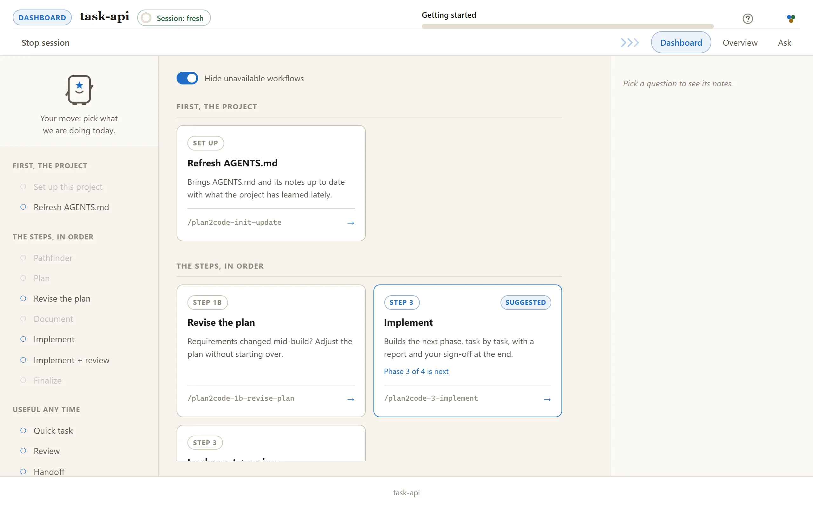
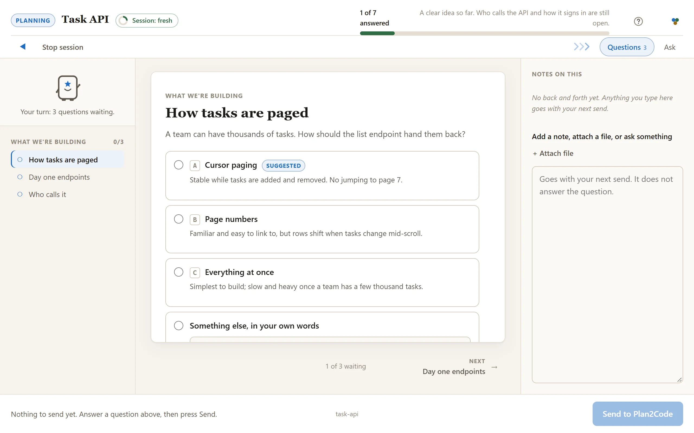
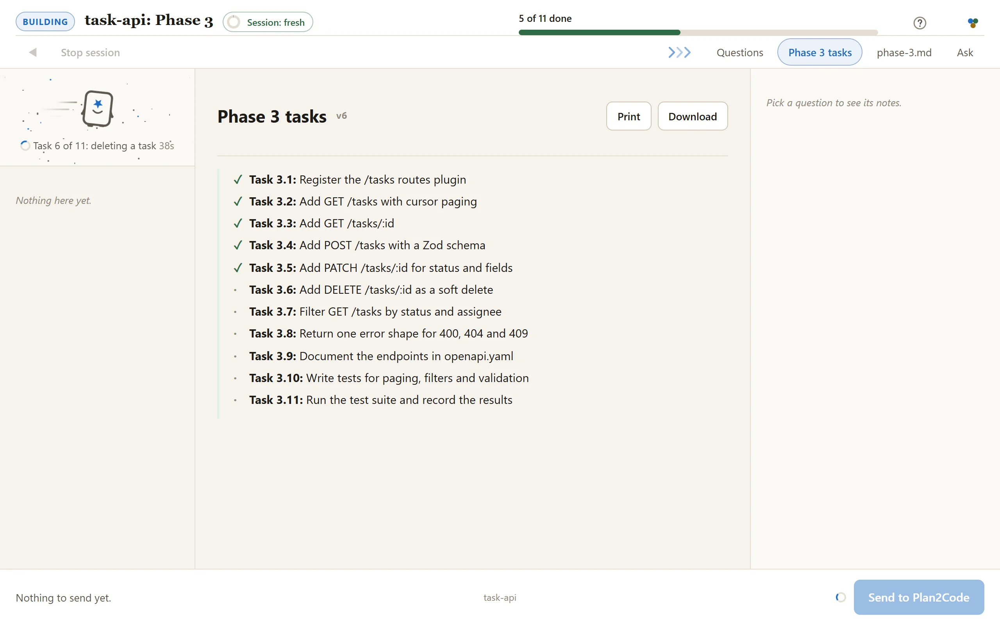
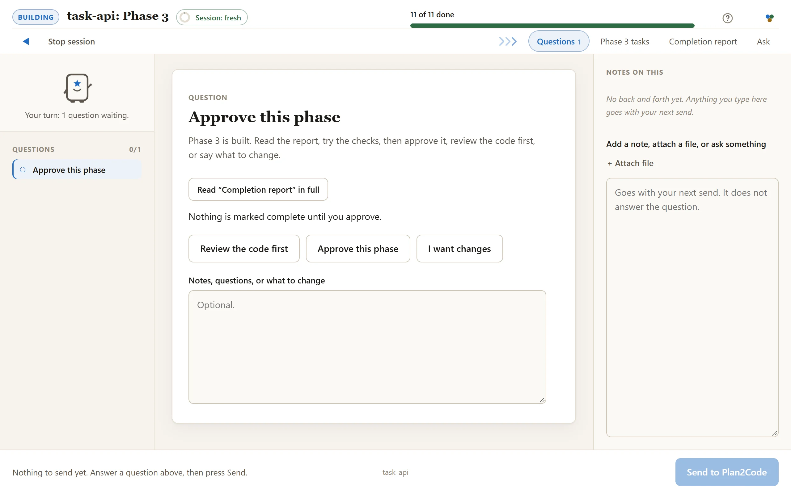
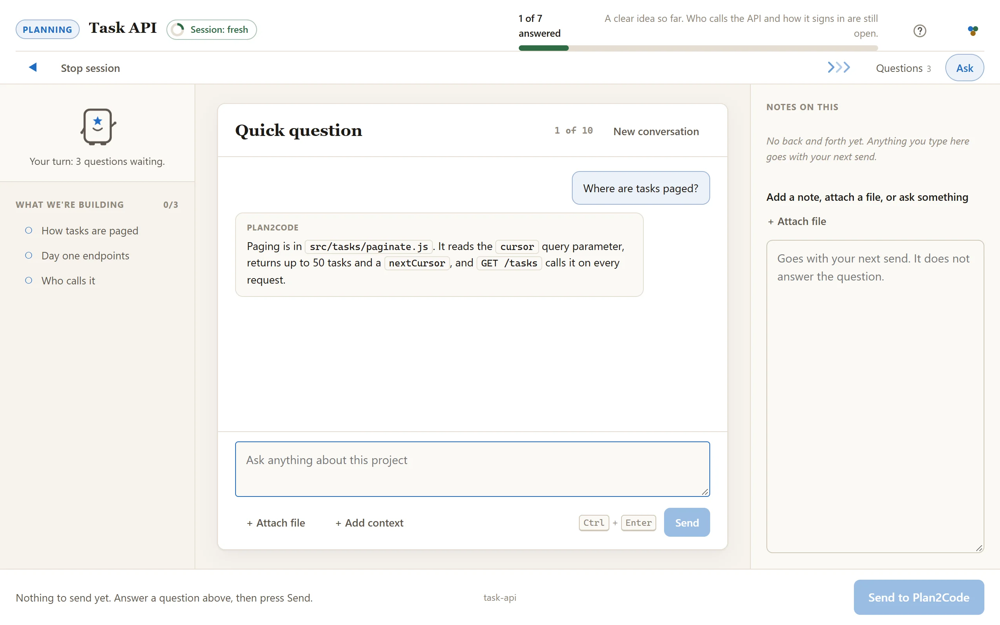
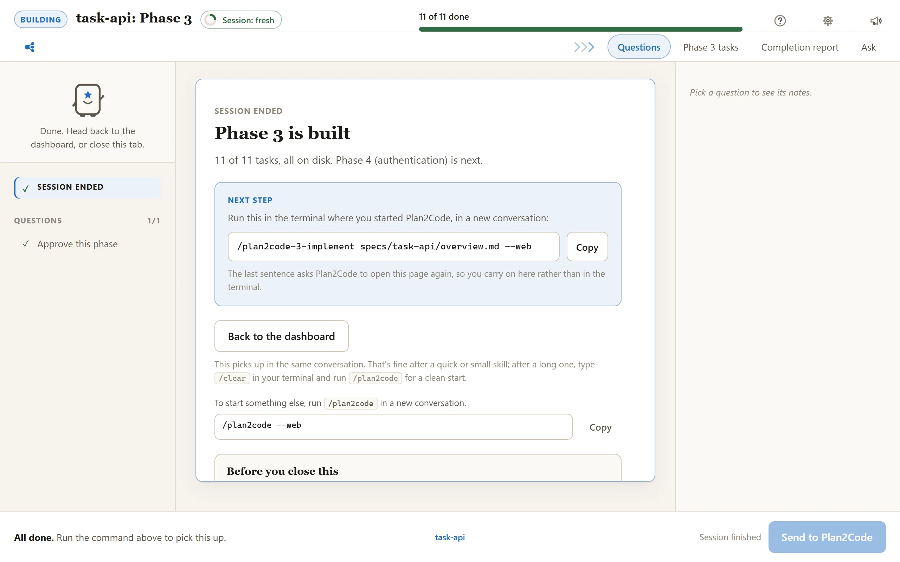

Plan and build with your AI agent, on one page.
Plan2Code asks the questions, drafts the plan and builds it one phase at a time. You answer and approve in your browser, and the specs land in your repo.
npx --allow-git=all git+https://github.com/jparkerweb/plan2code.git
then run plan2code in any project.

How a session goes
One page, from the first card to the sign-off. Your agent does the work in the terminal; you do your part here.

Pick a card, answer on the page
Pick a step on the dashboard and it starts right there. Questions arrive a few at a time, each option with its trade-off written under it.

Watch it build
Tasks tick off as they land, and the line beside Planny says what is being worked on right now.

Sign off
Read the completion report, then approve the phase or ask for changes. In Implement, you can also have the code reviewed first.
The pipeline
Every step is a card on the dashboard. Each one writes files the next one reads, so any session can pick up cold.
Pathfinder
Step 0 · optionalA foggy idea becomes a clear list of decisions, settled one question at a time.
/plan2code-0-pathfinderPlan
Step 1Requirements, technical design and your approval: the shape of what gets built.
/plan2code-1-planDocument
Step 2The plan becomes a checklist of small tasks, grouped into phases, that a developer can just do.
/plan2code-2-documentImplement
Step 3 · once per phaseBuilds the next phase, task by task, with a report and your sign-off at the end. Implement + review adds a careful review of the changes before the sign-off.
/plan2code-3-implementFinalize
Step 4Checks the work, writes the summary, files the specs away and suggests the commit message.
/plan2code-4-finalize
Quick task
Too small for the full process? A quick plan, then it just builds it.
Review
A second opinion on the changes. Problems ranked, and you pick what gets fixed.
Handoff
Pack this conversation into a document a fresh session can pick up cold.
What the page gives you
The same workflow as the terminal, with more room to think.
Trade-offs in plain view
Questions arrive a few at a time, each option with its trade-off written under it, so you choose rather than guess.
Review before you approve
Review the code first, on the sign-off card, reviews exactly the files the phase changed. You tick which findings get fixed, then approve.
The Ask tab
A chat beside the cards for anything you want to know. It is answered at the agent's next check-in and never holds up your answers.
Attachments on notes
Paste a screenshot or attach a document to a note on any question, and show instead of describe.
Workspace folders
Add a shared library or a design folder as read-only context, and point at it by its @name.
Session meter
A ring in the top bar turns from green to red as a session grows long, and suggests when a fresh one would serve you better.
Runs on your machine
A small program Plan2Code starts for you serves the page on 127.0.0.1. No account, no dependencies, and nothing leaves your computer.


The rules
Four rules do most of the work.
Keep each session short.
Chaining a couple of small skills on the dashboard is fine. Start a fresh console session when the session meter turns red, and always before a big planning or build step. The specs on disk carry everything between sessions.
No code until the plan hits 90% confidence.
Step 1 will not finalize below the threshold. Under it, the agent keeps asking and keeps reading your code, and writes every assumption down where you can argue with it.
Checkboxes are the state, not the chat.
Progress lives in the spec files. Any agent, any session, resumes cold from them.
Approve a phase to close it.
On the sign-off card, or by replying
approvedin the terminal. Nothing advances on a guess about what you meant.
Prefer the terminal?
Every skill also runs right in the terminal. Each one asks at the start whether you want the page or the terminal; add --web to skip the question and go straight to the page.
/plan2code /plan2code-1-plan --web plan a REST API for tasks
Install
Needs Node.js 18 or later. Run it again any time to update.
npx --allow-git=all git+https://github.com/jparkerweb/plan2code.git
then run plan2code in any project.